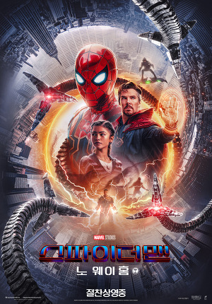

스파이더맨 노 웨이 홈
현재 상영중
Spider-Man: No Way Home
Spider-Man: No Way Home
영화 <스파이더맨: 노 웨이 홈>은 정체가 탄로난 스파이더맨 '피터 파커'(톰 홀랜드)가 문제를 해결하기 위해 '닥터 스트레인지'(베네딕트 컴버배치)의 도움을 받던 중 뜻하지 않게 멀티버스가 열리게 되고,
이를 통해 '닥터 옥토퍼스'(알프리드 몰리나) 등 각기 다른 차원의 숙적들이 나타나며 사상 최악의 위기를 맞게 되는 이야기를 그린 마블 액션 블록버스터.
999
|
14,500
|
개봉일 : 2022.02.16
감독 : 루벤 플레셔
장르 : 액션 / 116분
등급 : 12세 이상 관람
출연진 : 톰 홀랜드, 마크 윌버그, 소피아 알리, 타티 가브리엘 , 안토니오 반데라스
예고편